Rocket Maps: Documentation
Version 1.5.xRocket Maps builds fast, searchable maps for WordPress and places them on any page with one shortcode: Google Maps, Mapbox or MapLibre, listings with your own fields, custom markers and clusters, popups and a listings sidebar, a drag-and-drop search form, front-end submission with a member dashboard, ratings and CSV import/export. This guide covers installation, every shortcode and its parameters, the feature set, styling and template overrides, and translation.
Installation & Getting Started
This guide takes you from a blank WordPress site to a published map with its first listing. Follow the numbered steps in order; the setup wizard that opens after activation walks the same path. Moving over from the old Google Maps Locator plugin? Read Upgrading from Google Maps Locator first.
1. System requirements
Before installing, check that your site meets these minimums:
| Requirement | Minimum | Notes |
|---|---|---|
| WordPress | 6.0 or higher | Tested up to WordPress 7.1. WordPress will not activate the plugin on an older version. |
| PHP | 7.4 or higher | 8.0+ recommended for best performance. |
| MySQL / MariaDB | Any version your WordPress supports | The plugin creates its own helper tables on activation (map markers and the search index). |
| Map provider key | Required | Maps are drawn by Google Maps, Mapbox or MapLibre with MapTiler tiles, and each needs its own key or token: a Google Maps key, a Mapbox token or a MapTiler key (see Step 3). The free tiers of all three cover a typical site. |
| AI service key | Optional | Only for the AI assistant (see AI That Writes Listings and Reads Searches). Groq is built in and its free tier needs no payment card. |
2. Install and activate the plugin
Install from the ZIP file, or copy the plugin folder to the server.
Option A: upload the ZIP (recommended)
- In the WordPress admin, go to Plugins → Add Plugin (Add New Plugin or Add New in older WordPress versions) and click Upload Plugin.
- Click Choose File, select
rocket-maps.zipfrom your download and click Install Now. - When WordPress reports "Plugin installed successfully.", click Activate Plugin.
Option B: copy the folder (FTP/SFTP)
- Unzip the download and upload the
rocket-mapsfolder to/wp-content/plugins/on your server. - In the WordPress admin, go to Plugins, find Rocket Maps and click Activate.
The next admin page after activation is the setup wizard (Step 4).
Activation adds three menus to the admin sidebar, side by side after Comments:
| Menu | What is in it |
|---|---|
| Maps listings | All listings, Create new listing, and the Maps categories, Maps locations and Maps tags lists. |
| Maps | Your maps; Create new map makes another one. Each map has its own look, markers, popups, sidebar and search form, and is placed on a page with its shortcode. |
| Maps Admin | Settings, the Form Builder (the listing form) and CSV Import/Export (with the demo content). |
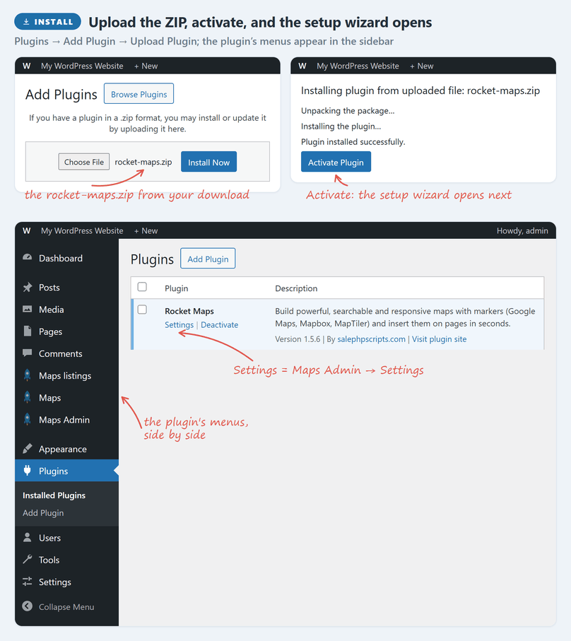
3. Enter your purchase code and choose a map engine
Your purchase code turns on one-click updates from inside WordPress. The wizard's first step opens this page, and you can come back to it any time.
- Go to Maps Admin → Settings (the page is titled Rocket Maps Settings) and stay on the General settings tab.
- Paste your purchase code into Purchase code*. On CodeCanyon it is under Downloads → License certificate & purchase code.
- Click Save Changes.
On save the plugin checks the code with the license server (salephpscripts.com) for your site address:
- If it passes, a green "License verification passed successfully!" notice appears, and the support status under the field shows how long updates and support are covered.
- Until a code has passed once, a red notice at the top says "Your installation of Rocket Maps was not verified. Any changes in the settings below will not be saved." So enter the code first, then set up the rest.
After that, new versions show up under Dashboard → Updates and on the Plugins screen like any other plugin; Check for updates now asks the update server right away instead of waiting for WordPress's regular check. Only the purchase code, your site's domain and the plugin version are sent, and only for these checks.
What if I skip this? Maps, listings, forms and imports all work without a purchase code, but the plugin gets no automatic updates and the Settings page keeps nothing you change on it (the map engine and its key included) until a code is verified. You can add the code later.
Map engine. On the same tab, pick the Map engine: Google Maps (the default), Mapbox GL JS or MapLibre GL + MapTiler. Then paste the key for the engine you picked:
- Google browser API key* for Google Maps. Enable these APIs for it in the Google Cloud console: Geocoding API, Maps JavaScript API, Maps Static API, Routes API and Places API (New). A project set up before March 2025 may have the older Directions and Places APIs instead, and routes and address autocomplete still fall back to them. The Google server API key (with the Geocoding API) is optional and only for the CSV import: its Geocode addresses option turns the addresses of imported listings into coordinates on the server, which the browser key cannot do. Everything else uses the browser key.
- Mapbox access token for Mapbox GL JS: a public token from your Mapbox account; the default token covers tiles, geocoding and directions.
- MapTiler API key for MapLibre GL + MapTiler: MapLibre itself needs no key, the MapTiler key authorises the tiles and the geocoding.
Map language sets the language of Google's place labels, address suggestions and geocoder (Automatic follows the visitor's browser and the site). Click Test map engine keys to try the values in the form before saving: it probes the map tiles, geocoding, directions and autocomplete of the selected engine. Then Save Changes. You can switch engines any time later; your maps, listings and search forms stay as they are.
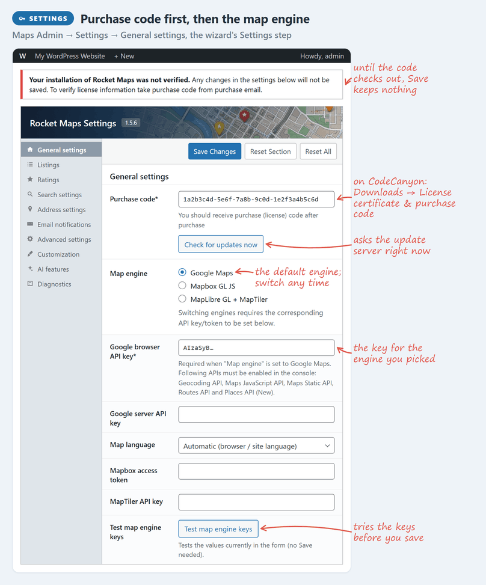
4. Run the setup wizard
The first admin page you open after activating is the setup wizard. It puts a bar with a step counter and a stepper on top of each real admin screen: ← Back and Next → move between the steps, Finish installation ✓ leaves early, and on the last step Next becomes Finish setup ✓. The wizard keeps no "done" flag, so deactivating and activating the plugin opens it again.
The steps:
- Settings: "Enter your Purchase code and the API keys for the Maps engine you plan to use." The settings page from Step 3.
- Form Builder: "Build the listing form your users will fill in – add fields, group them, and arrange the layout." Opens the Form Builder, where you add the fields a listing has: text, list, price, opening hours, date, website, email and more (see Submit Form and Custom Fields (Form Builder)). Import demo form jumps to the Demo content step with the demo listing form already ticked.
- Demo content: "Import demo listings for the countries you want to showcase, or skip ahead and create your first listing manually." Opens the Demo tab of CSV Import/Export (see Step 6). Skip demo import and create a listing adds a Create a listing step that opens the new-listing screen (see Step 7).
- Create a map: "Build your first map. After saving, you can create a page with the map shortcode in one click." Opens Maps → Create new map. When a map already exists (made by the demo import or the migration), the step is called Edit your map and opens that map instead, so running the wizard again never makes a duplicate.
Finish setup (or Finish installation) closes the wizard and lands on the Maps list.
On a site with data from the old Google Maps Locator plugin, Migration comes first, as step 1 of 5, and the wizard does not go on until it has run: see Upgrading from Google Maps Locator.
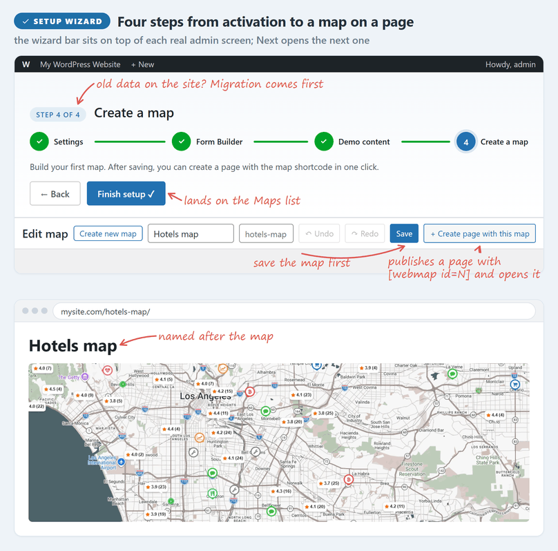
5. Create a map and put it on a page
A map is placed on an ordinary WordPress page with the [webmap id=N] shortcode, where N is the map's ID, title or slug. The wizard's last step opens a new map for you (Step 4). Without the wizard:
- Go to Maps → Create new map. Type a name in the toolbar's Map name box; the url-slug beside it fills itself in from the name.
- Set the map up in the boxes on the left while the live preview on the right follows every change (see Maps and Map Engines). The defaults already show every listing, with clusters, popups and a sidebar, so you can save straight away.
- Click Save. The + Create page with this map button appears next to it.
- Click + Create page with this map. The plugin publishes a new page named after the map, with
[webmap id=N]as its content, and opens it in a new tab. The map is live at that page's address.
Once a page shows the map, the button reads → Open page with this map and opens that page, so it never makes a duplicate. Prefer to do it by hand? The Maps list shows each map's shortcode; paste it into any page, post or widget.
| Shortcode | Purpose |
|---|---|
[webmap id=N] | The map itself, with its markers, popups, sidebar and search form, as set on its Edit map screen. |
[webmap-submit] | Optional page with the listing submission form, so visitors can add listings. |
[webmap-dashboard] | Optional page where members manage their own listings. |
6. (Optional) Import demo content
Want to see a finished map before you add your own listings? Import the demo data:
- Open the wizard's Demo content step, or go to Maps Admin → CSV Import/Export and pick the Demo tab.
- Under Import demo content, tick what to bring in: Import listings form (the demo listing form with its custom fields), Import demo maps (7: Auto-Popups, Directions and routes, Dots, Images, Opening hours, Prices and Search) and Import demo pages (7, one page for each demo map), then click Import demo. The
[webmap id=…]shortcode inside each imported page is rewritten to the freshly imported map's ID. An item whose slug already exists is overwritten, and the panel names those first; on a fresh site that is the Listing Form the wizard made. - In the country list, tick the countries to fill: 113 of them, each with up to 1,000 sample listings and their images (the number in brackets), 40,179 listings in all. Select all ticks every country.
- Click Import selected. With Import listings form ticked, the button reads Import selected + listings form and brings the form in first, so the listings get its custom fields; without the form only the core fields (title, content, address) are filled.
Big imports run in batches with a progress bar. If one stops on a network error, click the button again with the same countries ticked: it continues where it stopped, not from zero. You can delete the demo listings later under Maps listings.
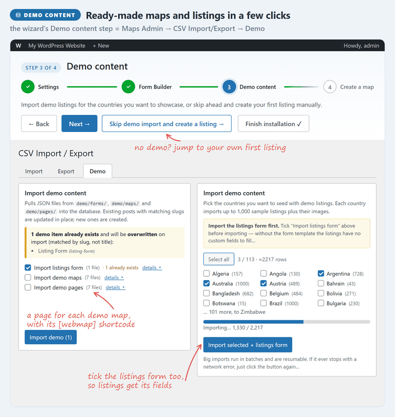
7. Quick walkthrough: your first listing
With a map and its page in place, add a listing by hand:
- Go to Maps listings → Create new listing.
- Fill in the Listing Form. Its fields come from the Form Builder; on the default form only Title is required. Categories offers what you created under Maps listings → Maps categories (nothing yet on a new site).
- Type the Address. It is turned into map coordinates when you leave the field; with a Map field on the form, its pin shows where the listing lands, and you can drag the pin to correct it.
- Click Create Listing (in the Publish box or under the form). The listing is published.
- Open your map's page (Step 5): the listing has a marker, opens its popup on a click, is in the sidebar and can be found by the search form.
Every map shows every published listing with an address, unless the map's Filter markers to display box narrows it to some categories, locations, tags, authors or field values. A listing has no page of its own in Rocket Maps: visitors see it in the map's popup, its sidebar and [webmap-listings].
That's it: a live map with its first listing. From here you can turn on Allow anonymous users to submit and add a [webmap-submit] page so visitors can add listings, set an expiration period, and build a search form for the map.
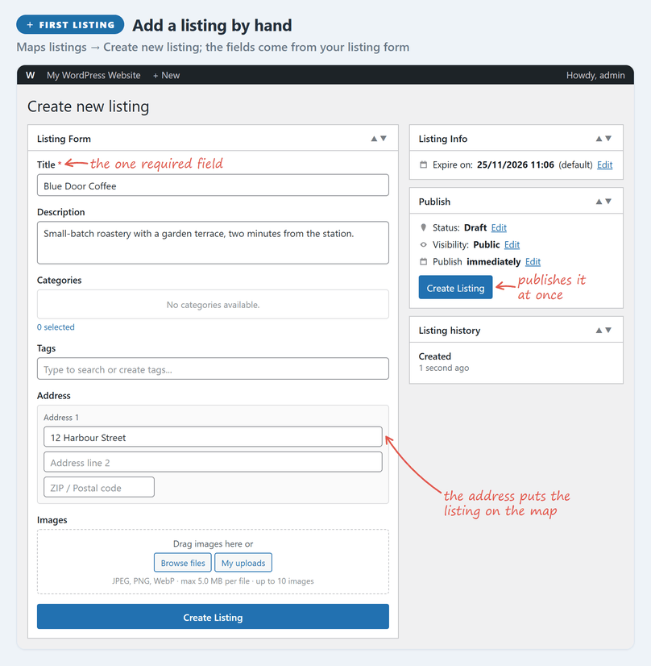
Upgrading from Google Maps Locator
Rocket Maps is the rebuilt successor of the Google Maps Locator plugin (the old Web 2.0 Google Maps item). When it finds that plugin's data, it converts the data once, in place:
- Back up your database and files first. The migration renames and rewrites your map data, and renames on tables of 100,000+ rows cannot be undone without a backup.
- Install Rocket Maps and activate it. If Google Maps Locator is still active, a screen asks "Would you like to migrate to Rocket Maps, or stay on Google Maps Locator?": Yes, migrate to Rocket Maps deactivates the old plugin and opens the migration; No, keep Google Maps Locator deactivates Rocket Maps and leaves your site as it was. Your purchase keys stay valid for the new plugin.
- The setup wizard opens on its first step, Migration (step 1 of 5). The same page is under Tools → Rocket Maps Migration, and a notice on the admin pages links to it (Open Migration Tool).
- The page lists every step with how many rows remain: the legacy content fields become the form template, the old
w2gm_*listings, maps, form, taxonomies, marker table, options and meta keys are renamed to theirrmaps_*names, and the map settings and opening hours are modernised. Click Run Migration Now. - The steps run in turn, 10,000 rows per call; a 100,000-listing site takes one to three minutes. You can close the tab and come back later: the runner remembers its progress and goes on from there.
- When every step shows Done, the page says Migration complete., and Continue to Settings → takes you on through the wizard.
Until the migration has finished, the wizard shows no Next or Finish button ("Run the migration above to continue – this step can't be skipped."). The rest of the WordPress admin stays open, so you can still make a backup or deactivate the plugin.
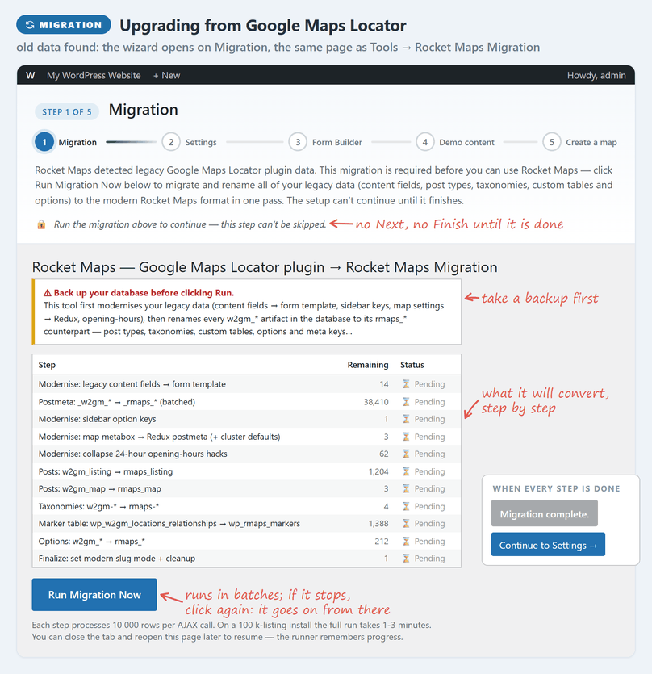
Rocket Maps registers a small family of shortcodes you can place in any page, post or widget. They fall into three groups:
- Map shortcodes: the map itself, and its search form and listing list placed anywhere on the page.
- Submission and dashboard shortcodes: the pages where visitors add listings and members manage them.
- Utility shortcodes: the map-engine switcher for demo pages.
Notes on syntax
- Boolean attributes accept
1/0. - Any attribute you omit falls back to the default shown in the tables below, or to the map's own settings on its Edit map screen.
- A shortcode placed somewhere the plugin cannot scan, such as a page-builder header or footer template or a widget area, needs Always load front assets (Maps Admin → Settings → Advanced settings), or its scripts never load.
Map shortcodes
[webmap]
The map. Draws one of your maps with everything set on its Edit map screen: the engine style, markers and clusters, popups, the listings sidebar, the on-map search form, controls and the starting point. The Maps list shows each map's shortcode, and + Create page with this map on the Edit map screen publishes a page holding it (see Installation, Step 5).
| Attribute | Default | Description |
|---|---|---|
id | required | Which map to show: its numeric ID, its title or its slug ([webmap id="my-store-locator"]). Prefer the ID: renaming the title or slug breaks a reference by name. Without a matching map nothing loads. |
lazy_load_mode | the map's setting | When the map loads on this page: initial (with the page), scroll (when it scrolls into view) or click (on a click on its placeholder). Overrides the map's Lazy load mode for this one placement; see Lazy load mode. |
width | full width | A fixed width in pixels; empty fills the container. |
sticky_scroll | 0 | 1 pins the map to the top of the window while the page scrolls past it. |
sticky_scroll_toppadding | 0 | The gap in pixels above a sticky map, to clear a fixed site header. |
The height, the starting point, the zoom and the rest come from the map's own settings; change them on its Edit map screen. Several maps can share a page, each with its own shortcode.
[webmap id="12"]
[webmap id="12" lazy_load_mode="click"]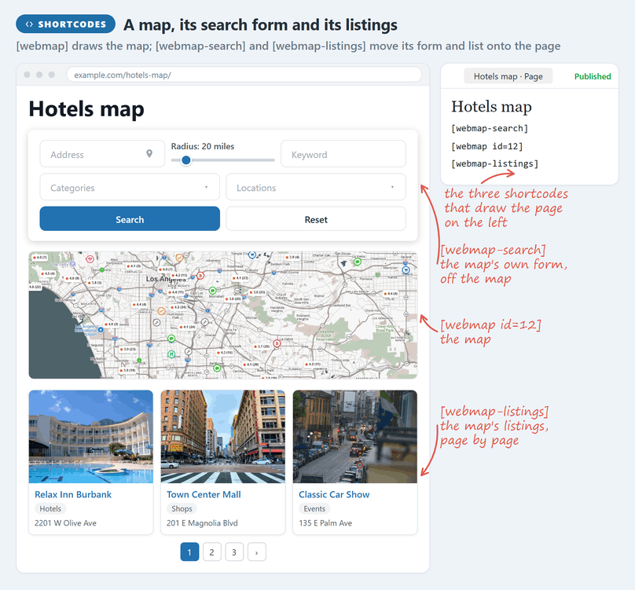
[webmap-search]
The map's search form, placed off the map: above it, beside it in a column, or anywhere else on the page. It shows the form you built in the map's Search options box and searches the first [webmap] on the same page; the map then leaves out its own on-map form, so the page has one form, not two. Takes no attributes. Without a map on the page it falls back to a plain form with keyword, address, radius, category, location and tag fields.
[webmap-search]
[webmap id="12"][webmap-listings]
Listing cards with pagination. With a [webmap] on the page it shows that map's listing list, the one its sidebar would show (same fields, order and search results), and the map leaves out its own sidebar; the attributes below are then ignored. Without a map it is an independent list filtered by the attributes.
| Attribute | Default | Description |
|---|---|---|
categories | empty | Only listings in these categories (comma-separated term IDs). |
locations | empty | The same, for locations. |
tags | empty | The same, for tags. |
num | empty | Listings per page. |
order_by | post_date | Sort order: post_date, title or random. |
order | DESC | Sort direction: ASC or DESC. |
[webmap-listings categories="4,9" num="12" order_by="title" order="ASC"]Submission and dashboard shortcodes
[webmap-submit]
The front-end submission page: the listing form from the Form Builder on one screen, with its AI buttons, Submit Listing and, for signed-in users, Save as draft. Visitors who are not signed in get the sign-in, registration and password-recovery forms on the same page, unless guest submissions are allowed (Allow anonymous users to submit): then they give a name and an email and submit straight away. Takes no attributes. The Submit new listing button of the dashboard leads here.
[webmap-submit]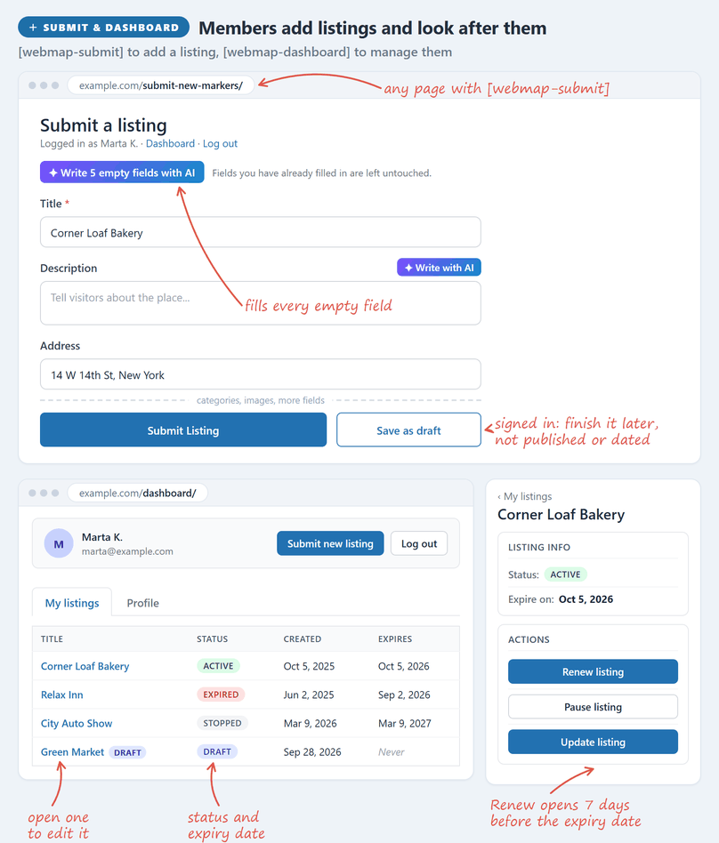
[webmap-dashboard]
The members' area: sign-in, registration and password recovery for logged-out visitors; for signed-in users the My listings and Profile tabs, with Submit new listing and Log out in the header. Opening a listing shows its edit form with a Listing info box (status, sorting date, expiry date, history) and an Actions box: Renew listing (when renewal is allowed and the listing is in its renewal window), Pause listing / Resume listing and Update listing; a draft gets Submit listing and Update draft instead. Takes no attributes.
[webmap-dashboard]Utility shortcodes
[rmaps-engine-switcher]
A small button group (Google Maps / Mapbox / MapLibre) that lets a visitor reload the page under another map engine. Meant for demo pages: it takes effect only when per-visit engine overrides are enabled with define( 'RMAPS_ALLOW_ENGINE_URL_OVERRIDE', true ); in wp-config.php; otherwise the buttons show with a short "URL switching disabled" note. The same constant lets ?rmaps_lazy=scroll (or click, initial) try a lazy load mode for one visit.
| Attribute | Default | Description |
|---|---|---|
label | Map engine: | Text shown before the buttons. Pass label="" to hide it. |
[rmaps-engine-switcher label="Choose engine:"]Features
Rocket Maps builds fast, searchable maps for WordPress: listings with your own fields, three map engines, custom markers and clusters, popups and a listings sidebar, a drag-and-drop search form, front-end submission with a member dashboard, and an optional AI assistant. Each part below says what a feature does and where its settings live in wp-admin.
The plugin's admin menus sit together in the sidebar:
- Maps listings: the listings, plus the Maps categories, Maps locations and Maps tags lists.
- Maps: build each map and its search form.
- Maps Admin: Settings, Form Builder and CSV Import/Export.
AI That Writes Listings and Reads Searches
An optional AI assistant drafts listing texts, and with the AI Assistant Add-on it also turns a visitor's sentence into search filters. It stays off until you switch it on, and nothing is sent to any AI service before that.
Switching it on (Maps Admin → Settings → AI features):
- Under Groq, the service built into the plugin (its free tier needs no payment card), paste an API key, choose the Model (
openai/gpt-oss-120bby default) and test the key. - Turn AI features on: "One switch for everything below." While it is off, no AI request leaves the site, whatever keys are saved, and the generate buttons do not appear on the form.
Writing a listing. A ✦ Write with AI button sits next to the field's label in the listing form, in wp-admin and on the [webmap-submit] page alike. Once the title is filled in and a category chosen, a click drafts the text from the listing's name, categories, tags and location and the other fields already filled. The draft goes into the field marked ✦ AI until someone edits it, and nothing is saved until the listing is. The text is written in the site's language (with WPML or Polylang, in the listing's language), and facts are never made up: prices, phone numbers, dates, opening hours and web addresses are never generated, and emails, phone numbers and images are never sent.
The rest of the tab:
- Services: each service's key, model and Use this service switch, and the Order of services. The first service that is on and has a key answers; if it fails or hits its rate limit, the next one takes over.
- Fields AI can fill: Offer generation for picks the fields that get a Write button. The built-in assistant writes the Description.
- House style: Extra instructions for your tone, up to 600 characters.
- Access and limits: Who can use AI generation (signed-in users only by default, or anyone, including anonymous submitters; set up reCAPTCHA as well if you allow that), Requests per person, per hour and Requests for the whole site, per day (0 for no limit), plus a usage table and a Debug log of the last 20 calls.
The AI Assistant Add-on is a separate plugin, installed in one click from the same tab; its options appear there too. It adds:
- five more services: OpenAI, Google Gemini, DeepSeek, Mistral and OpenRouter;
- a Write button on every multi-line text and option field, with Per-field instructions;
- a ✦ Write N empty fields with AI bar that fills all the empty fields in one request and leaves the filled ones alone;
- ✦ Choose with AI, which picks a map marker icon for an address;
- assisted search: a visitor types a sentence such as "a cheap place open on Sunday that takes cards" into the keyword field, and the map's search form sets its own filters (the category, the location and distance, the sliders and lists your form carries), shown as chips above the results. Only values the form actually offers are set, and a filter the visitor set or cleared stays as they left it. It is set up with Read search phrases with AI (off by default), Shortest phrase worth reading, Notes for the model and Say that AI helped, which shows a small note on a search form that has a Keyword field (the only one AI reads from). It follows the same Who can use AI generation rule.
Keys stay on your server, and every call is made by the server, only when someone clicks an AI button (or, with the add-on, searches with a phrase long enough to read). A writing request carries the listing's name, categories and tags, its location's name (not the street address) and the other readable fields that are filled.
Settings: Maps Admin → Settings → AI features.
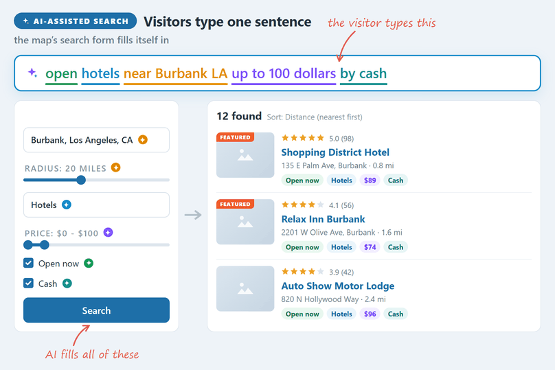
Submit Form and Custom Fields (Form Builder)
Listings are the entries your maps show: a title, description, categories, tags, addresses, images and videos, plus any custom fields you add. You design the listing form in the Form Builder (Maps Admin → Form Builder). The same form is used in wp-admin (Maps listings → Create new listing) and on the [webmap-submit] page, and its fields are what the map's markers, popups, sidebar and search form can show and filter by.
The builder has three panes: the palette, the form itself, and the properties of the selected item.
- Core fields, once per form: Title, Content, Excerpt, Categories, Tags, Address, Map, Images & Videos and Contact info (the contact form of the map popup, see Emails & Contact Form).
- Field types, as many as you like: Phone, Text/string (a single line, a text area or an HTML editor), Number, List (dropdown, radio buttons or checkboxes, with an icon per option), Website URL, Email, Date-Time, Price, Opening hours and File upload.
- Layout: fields sit in rows on a six-part grid at full, ⅔, ½ or ⅓ width, and a field can reach into an empty cell above or below. Fields can be gathered into titled groups (select several with Ctrl+click, then Merge into group); groups can be nested.
- Per field: name, slug, icon, width, required, description and the type's own options (phone mode, number range, price format, list display, allowed file types, and so on). A custom field can be shown only for chosen categories (Category dependency, or Show for all categories).
- Per group: name, width, category dependency and Hide from anonymous users: logged-out visitors see the group title and a prompt to log in instead of its fields, and the group's fields stay out of popups and the sidebar for them.
- The Categories field can be a checkbox list, dropdowns level by level, or type-to-search where a submitter can also add a category that does not exist yet.
In the form, category-dependent fields and groups appear as soon as a matching category is ticked. In popups and the sidebar, fields show in the order you pick there, with their icons; values are clickable where that helps: a phone number calls, and in Viber, WhatsApp or Telegram mode opens that messenger; emails and websites are links; list values show as chips, files as download links, and opening hours as an open/closed status.
Settings: Maps Admin → Form Builder.
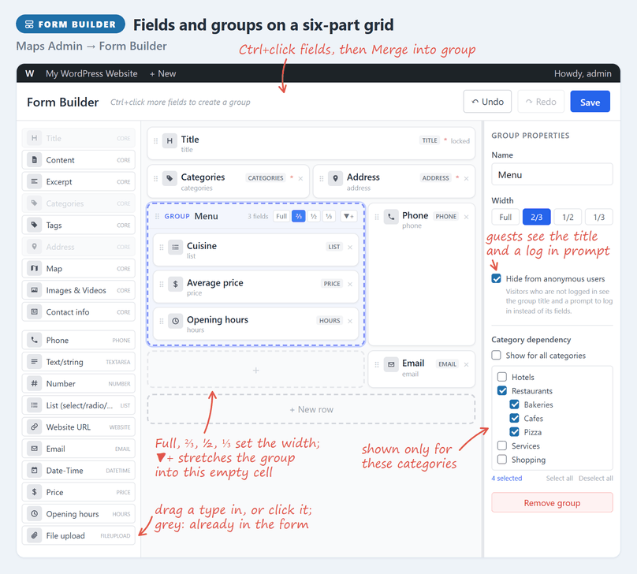
Categories, Locations and Tags
Listings are organised with three taxonomies, managed under Maps listings → Maps categories / Maps locations / Maps tags. Categories and locations are hierarchical (Food › Cafés, USA › California › Los Angeles); tags are flat keywords.
- Category markers. Each category can have its own map Marker: a Font Awesome glyph in a colour, a PNG from the bundled marker set, or your own upload. It is set on the category's Edit screen or right in its row of the categories list (the Marker column), and each pick is saved on the spot. A sub-category without a marker takes its parent's. See Custom markers and marker icons.
- Locations are chosen inside each address of the listing form, one dropdown per level (Country, State and City by default), when the Address field's Show locations dropdowns option is on.
- Tags are typed in the form (new tags can be created there) and found by keyword search.
- On the map, categories, locations and tags are search filters (the search form's Categories and Locations fields, each with its own depth and choice of terms), can narrow what a map shows at all (Filter markers to display), and can be shown in popups and the sidebar as chips.
Settings: Maps listings → Maps categories / Maps locations / Maps tags; the marker picker on each category's Edit screen and in its list row.
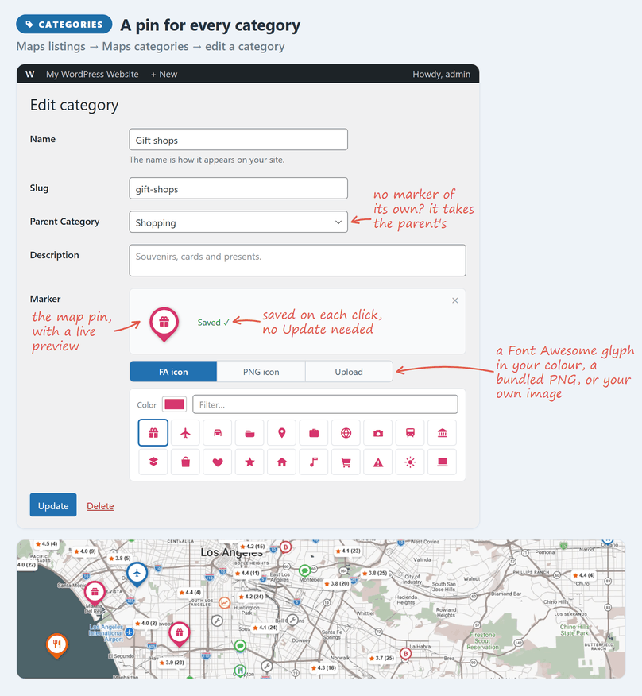
Addresses
The Address field of the listing form holds one or more addresses (its Number of addresses, 1 to 10). Each has location dropdowns, Address, Address line 2, ZIP / Postal code, a Marker icon and, folded, Manual coordinates; a listing with three addresses has three markers.
- Finding the place. A typed address is turned into map coordinates when you leave the field. With autocomplete on, suggestions appear as you type, and Get my location fills the address from the browser's position (it needs HTTPS). Both are off by default; switch them on under Maps Admin → Settings → Address settings → Address input, where autocomplete can also be limited to one country. The same options apply to the address box of the search form and to directions.
- Pinning it. When the address is not precise enough, drag the pin on the form's map, or type the latitude and longitude under Manual coordinates.
- Printing it. Address format (same settings tab) decides how an address reads in popups and the sidebar: drag tokens such as Address Line 1, Zip / postal index or the location levels into order, add text or separators (comma, space, line break), and check the live preview. An empty token is skipped together with the separator after it.
Settings: Maps Admin → Settings → Address settings (Address format, Address input); the Address field's options in the Form Builder.
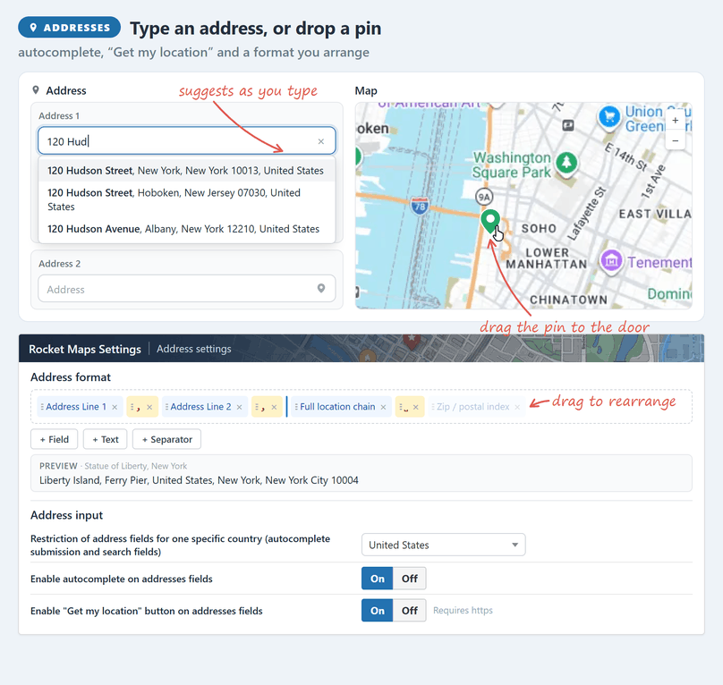
Maps and Map Engines
Every map is drawn by the engine you pick under Maps Admin → Settings → General settings: Google Maps (with Street View, satellite, rotate and tilt), Mapbox GL JS (vector tiles, smooth zoom and a globe view) or MapLibre GL + MapTiler (open-source rendering on MapTiler tiles). Test map engine keys checks tiles, geocoding, directions and autocomplete before you save. You can switch engines at any time; your maps, listings and search forms stay as they are, and each map remembers its style per engine.
Maps are built under Maps → Create new map. The Edit map screen has a toolbar (map name and slug, Undo / Redo, Save, + Create page with this map), the settings boxes on the left and a live preview on the right that redraws as you change them. Its boxes, top to bottom:
- Map settings: Listings limit (empty shows every marker), Map width and Map height (400 by default; pixels or a percentage of a fixed-height parent), the engine's ready-made style (Google Map style, Mapbox style or MapTiler style), Globe projection (Mapbox and MapLibre), Lazy load mode, Make map to be sticky on scroll with its Sticky scroll top padding, Show loader and Enable automatic user Geolocation, which centres the map on the visitor (it needs HTTPS).
- Map starting point and radius: Use map starting point and zoom with the latitude, longitude and Starting zoom (or Auto, which fits the markers); Save and follow map center: Disabled, Just save (the browser remembers where the visitor left the map) or Save in URL (the camera goes into the page address, so a view can be shared as a link); Show markers in radius limits the map to a distance around the starting point, drawn by Show radius circle.
- Map controls: the full-screen button (and Map full screen opened by default, Google only), the camera/rotate control, Map / Satellite buttons, Street View, zoom by mouse wheel and zoom buttons, dragging on touch screens and by one finger, Center map on marker click, Zoom map on marker click, the locations counter with its Counter text (
Number of locations %d), and the farthest and closest zoom levels. - Markers, Clusters, Popups and Listings sidebar: see Markers and Clusters and Popups, Sidebar and Listings.
- Search options: the map's own search form (see Front-end Search).
- Filter markers to display: narrows which listings the map shows at all, by categories, locations, tags, authors, exact listing IDs and any price, number, list, date or opening-hours field (Only show listings open right now). These filters are fixed: visitors do not see them in the search form.
Big maps stay fast: the markers in view load first, the rest stream in batches (5,000 listings per batch by default), markers are drawn on a canvas, and popups load their content when opened.
For demos, [rmaps-engine-switcher] shows buttons that let a visitor switch the engine on the fly (it needs a one-line opt-in constant in wp-config.php; without it the buttons explain that switching is off).
Settings: Maps Admin → Settings → General settings (engine, keys, language, key test); Maps (build maps).
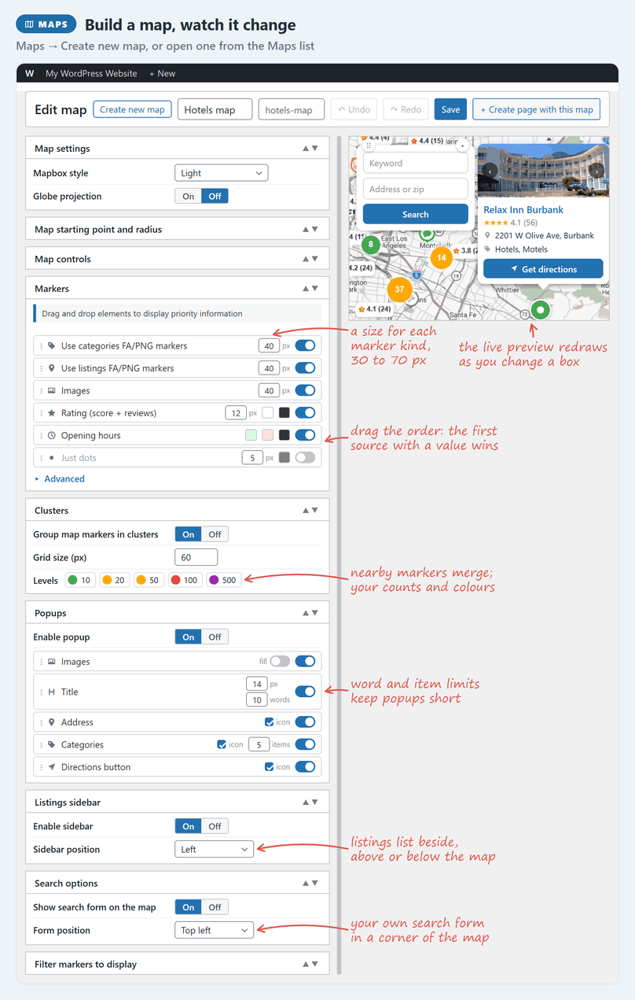
Lazy load mode
A map further down a page, or one most visitors never open, does not have to slow the page down. Lazy load mode in the Map settings box decides when the map loads:
- Initial load (the default): the map loads with the page.
- Load on scroll: nothing of the map loads until it scrolls into view; a placeholder holds its place, then shows "Loading the map…".
- Load on click: the page shows a placeholder with a Show the map button and the line "Interactive map of the places on this page."; a click anywhere on it loads the map.
While a map waits, none of its scripts or requests load: on a page whose maps all wait, the map engine itself (Google Maps, Mapbox or MapLibre) is not downloaded with the page, and no map settings or markers are fetched. The placeholder takes the map's height, so the page does not jump when the map arrives. A search made in a [webmap-search] form meanwhile, or filters already in the page address, are shown on the map once it loads; the address field of the search form fetches Google's address suggestions the first time it is used. One page can mix modes, and [webmap lazy_load_mode="…"] overrides the map's setting for one placement.
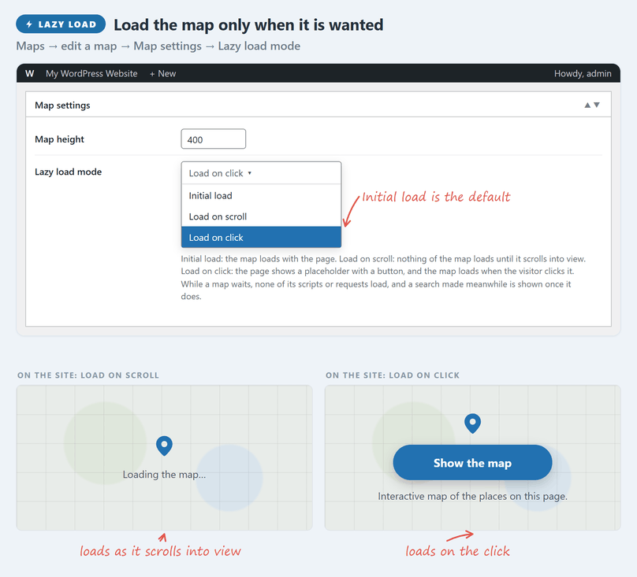
Markers and Clusters
Markers. The Markers box holds a drag-ordered list of marker sources; for each listing, the first source that has a value draws its marker, so you can show a price where there is one and a category icon everywhere else. The sources:
- Use categories FA/PNG markers: the marker of the listing's category (see Custom markers).
- Use listings FA/PNG markers: the listing's own marker, picked for each address in the listing form.
- Images: the listing's photo, cropped into a round marker.
- Rating (score + reviews): the score as a label, "4.5 (12)" with a star, when ratings are on.
- Any text, price, number, date or list field as a coloured label, and Opening hours as a label that turns green when the place is open and red when it is closed.
- Just dots: small dots (5 px, grey by default), off unless you switch it on; good for thousands of points.
Category, listing and image markers each have their own size (30 to 70 px, 40 by default); labels have their own background and text colours. The Advanced panel sets the Marker rendering (Drawn (canvas), the default, or HTML (DOM)), Overlap resolution (markers at the same spot fan out around it), Transitions (markers fly or fade into and out of clusters) and the streaming batch size. For the fastest maps, turn overlap resolution and transitions off.
Clusters. With Group map markers in clusters on (the default), nearby markers merge into a counted cluster that splits as the visitor zooms in. Grid size (px) (60 by default) sets how close markers must be to merge, and the levels table gives each size of cluster its colour and size (up to 10, 20, 50, 100 and 500 markers by default, green to purple); Single-color accumulate mode draws clusters in one colour without a count. A click on a cluster zooms into it; a cluster that zooming cannot break up, such as several listings at one address, opens a list of its listings instead.
Settings: Maps → [edit map] → Markers / Clusters; category markers under Maps listings → Maps categories.
Popups, Sidebar and Listings
Popups (the Popups box). A click on a marker opens a card with the fields you pick, in the order you drag them: images, title, rating, address, categories, any custom field, the contact form (Send message) and the Directions button. Each row has its own options: an icon, a word limit for texts (10 for the title and 20 for the others by default), an item limit for categories, tags and lists (5), crop or fit for the images, the title's font size, and a price look (badge, divider, accent colour, smaller currency sign). Popup max width (250) and Popup max height (500) size the card; Close popup on outside click is on by default.
Auto-popups. With Enable Auto-popups on, the map shows a small card beside each visible marker without a click, up to 15 at a time and never covering more than 40% of the map. The cards follow their markers as the map moves, fly into a cluster as you zoom out and out of it as you zoom in, and a click on one dismisses it until its marker leaves the view. They use the same fields as the click popup.
Directions. The popup's Get directions button opens a directions panel on the map: the visitor types a starting address (or uses Find my location) and clicks Go. The route is drawn with its start and end marked A and B and the map fitted to it, the steps are listed in the panel (pointing at a step lights it up on the map, clicking it zooms there), and Reset takes the route off the map.
Listings sidebar (the Listings sidebar box). An optional list of the listings on the map, on the left, right, top or bottom (Sidebar position), Sidebar width / height 300 px, open or folded by default, paged by Listings per page (20). It has its own fields and limits, separate from the popup's, and its own order (Listings order by: date, title, random, or any price, number or date field; Order direction). Pointing at a listing can fly the map to its marker (Fly to hovered map marker) and make the marker scale up, pulse, drop a shadow, bounce or sway (Marker hover effect). The sidebar follows the search: it lists what the map shows.
Listings on the page. [webmap-listings] puts the same list on the page as cards with pagination, below or beside the map, and the map then leaves out its own sidebar (see the shortcode).
Settings: Maps → [edit map] → Popups / Listings sidebar; the lightbox for popup and sidebar photos under Maps Admin → Settings → Customization.
Front-end Search
Each map has its own search form, built by drag and drop in its Search options box. The form floats in a corner of the map (Form position: top left, top right, bottom left or bottom right; Form width, 400 px by default), the visitor can drag it and fold it (Allow form drag and toggle), it can be folded in fullscreen too, and on narrow screens it moves above or below the map. [webmap-search] shows the same form off the map, anywhere on the page.
The builder's palette: Address (autocomplete plus radius), Radius (a slider), Keyword, Categories, Locations, Search button, Reset button, More filters (a collapsible section), and the listing form's price, list, number, date/time and opening-hours fields under Template fields; with the Ratings & Reviews plugin, a rating filter. Fields sit in rows at full, ⅔, ½ or ⅓ width, and each has its properties: a label; the default radius (20) and the slider's range; which categories or locations to offer, how deep, one or several, and whether a term also matches its sub-terms; From/To inputs or a slider for prices and numbers, with a currency symbol; checkboxes, radio buttons or a dropdown for lists, in up to four columns; title or word suggestions for the keyword; and whether More filters opens by default.
On the site:
- Keyword search uses a full-text index (titles, texts, list values and category, location and tag names), suggests as you type and can order results by relevance.
- Address + radius finds listings within a distance, in miles or kilometres (Settings → Search settings → Dimension in radius search), and draws the radius as a circle on the map.
- A form with a Search button searches on the click or on Enter; a form without one searches as soon as a dropdown, slider or date changes, and a typed keyword or address on Enter.
- Above the results, a chip names each active filter, with an × to remove it and Clear all when there are two or more.
- Put the search in the URL (off by default) keeps the search in the page address, as plain parameters such as
?address=Paris&radius=20, so a search can be shared or bookmarked. Such filtered addresses are marked noindex, follow for search engines. - Search forms on one page stay in step: a search from one shows its values in the others.
The search narrows the markers, the sidebar and [webmap-listings] together; the map's fixed Filter markers to display still applies under it.
Settings: Maps → [edit map] → Search options; defaults in Maps Admin → Settings → Search settings (radius unit, search index).
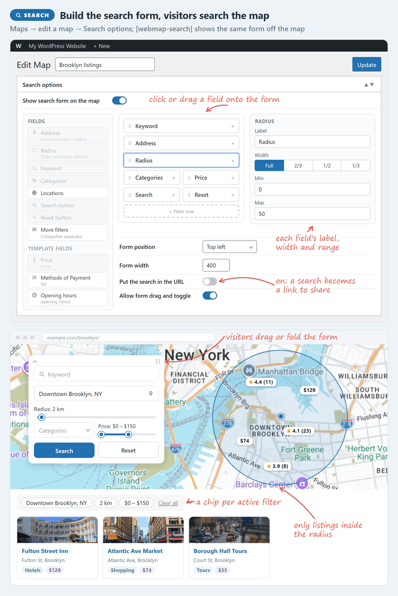
CSV Import and Export
Maps Admin → CSV Import/Export moves listings in and out in bulk.
Import takes three steps:
- Upload: choose what to import (listings, categories or locations) and whether to create new listings or update existing ones (the file then needs a
post_idcolumn). Upload one or more CSV files, or a ZIP holding the CSV and its images, plus any number of image ZIPs, and set the column and multi-value separators. - Map columns: match each CSV column to a listing field: title, author, status, description, summary, categories, tags, locations, address parts and coordinates, the marker icon and its colour, images and their captions, YouTube or Vimeo video links, expiration date, contact email and every custom field of the listing form. Options set the author, turn addresses into coordinates where they are missing (Geocode addresses, with a Test geocoding button; Google needs the server API key), create missing terms and convert images to WebP.
- Run import: batches with a progress bar and counts of created, updated, skipped and failed rows; Pause after current batch stops it and Resume carries on. Failed rows are listed and saved to
errors.csv.
Images are given as the file names of the pictures in the uploaded ZIP (with an optional >caption); the first becomes the main image. Categories and locations take names, slugs or IDs, with > for the hierarchy (United States > Louisiana); markers take a Font Awesome class (rmaps-fa-automobile) or a PNG file name. Dates are dd.mm.yyyy HH:MM, and opening hours read like Mon 01:00 AM - 12:30 PM. Empty cells never overwrite existing values. An import that stopped can be resumed from the Unfinished imports panel for 7 days. The full instructions are printed beside the importer.
Export writes the listings to a CSV with the columns you tick (the same list as the import), filtered by status or post IDs if you like, and can pack the image files into a ZIP that imports straight back. Videos export as links. With WPML or Polylang, translations become extra columns.
Demo content fills a new site with something to look at, and the Demo tab has two halves. The upper one brings in the demo items the plugin ships as JSON: the listings form (1 file), the maps (7: Auto-Popups, Directions and routes, Dots, Images, Opening hours, Prices, Search) and the pages (7, one for each map, its shortcode pointed at the imported map). Each group is a tick of its own, and details opens its file list, so you can take one map instead of the set. An item whose slug already exists is not duplicated: it is overwritten in place, and both the notice above the list and the item itself say so before you start.
The lower half seeds the listings themselves: 113 countries, up to 1,000 sample listings each with their images, 40,179 in all. Select all ticks every country and the counter shows how many rows the choice adds. Tick the listings form as well and the button reads Import selected + listings form: the form goes in first, so the listings arrive with its custom fields filled rather than only a title, a description and an address. Big imports run in batches and are resumable. The setup wizard opens this same tab at its Demo content step (see Installation, Step 6).
Settings: Maps Admin → CSV Import/Export (Import, Export and Demo tabs).
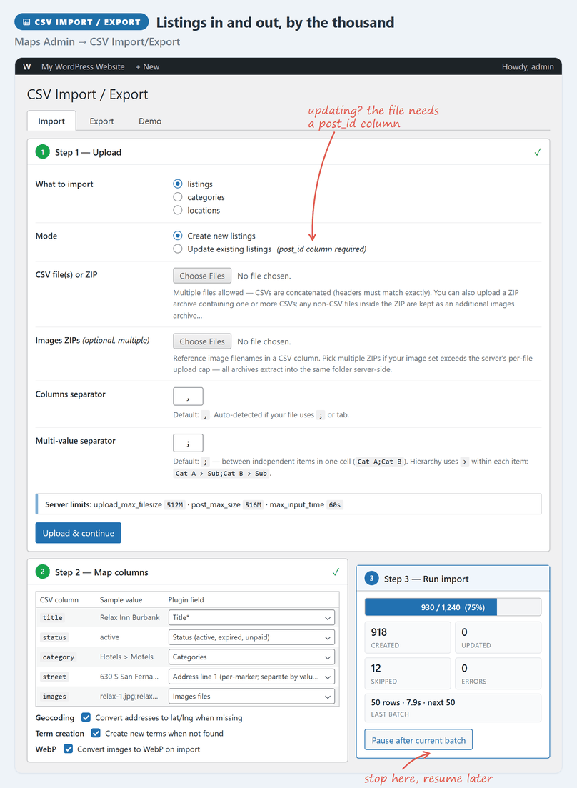
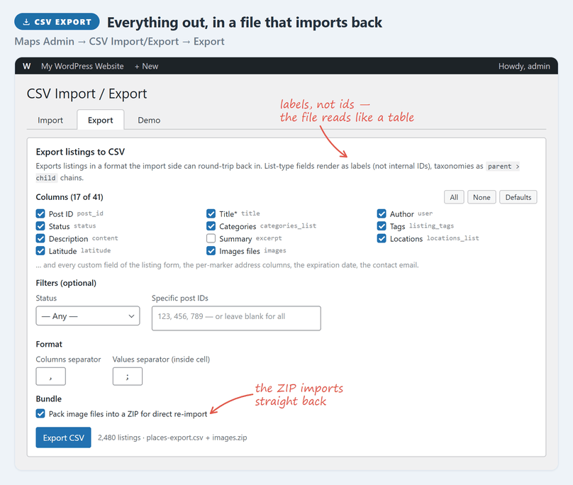
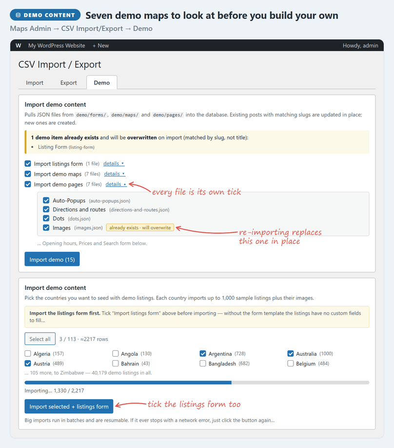
Ratings
The plugin has built-in star ratings: a visitor rates a listing from 1 to 5 stars in one click, and the average with the number of votes shows in map popups and the map sidebar, and as rating markers on the map (the Rating (score + reviews) marker source). Turn them on under Maps Admin → Settings → Ratings (Enable ratings, off by default), where you can also let logged-out visitors rate (Allow anonymous ratings) and protect their votes with reCAPTCHA v3. Rating again replaces the visitor's earlier vote. Add the Rating field to the map's Popups and Listings sidebar lists to show it there.
For written reviews, install the separate Ratings & Reviews plugin (version 2.0 or later): rich-text reviews with photos, ratings per criterion, helpful votes, moderation and a reviewer dashboard. While it is active it takes over the rating displays and adds a rating filter to the search form builder; the Ratings tab says so, and the built-in votes are kept.
Settings: Maps Admin → Settings → Ratings.
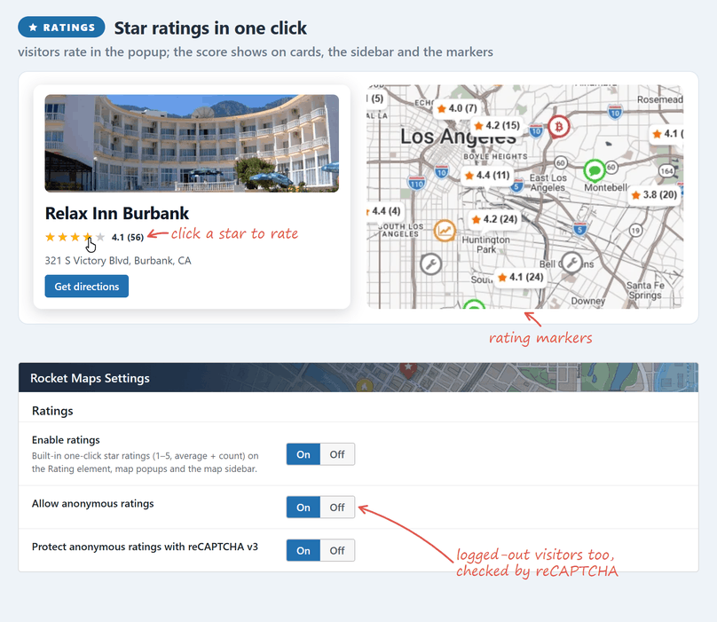
Front-end Submission and Dashboard
Visitors and members can add listings on the site. Create a page with [webmap-submit] for the form and one with [webmap-dashboard] for the members' area (the demo import has neither; add them by hand).
- The form is the listing form from the Form Builder, on one screen, with the AI buttons when AI is on.
- Accounts: sign-in, registration (Allow users registrations) and password recovery work right on the submission page. With Allow anonymous users to submit on, a guest gives a name and an email; an account is created, and the listing waits until the guest clicks the link in the activation email. Until that click the listing sits as a WordPress Draft with the status awaiting activation, and it is not on the map. This is not moderation, and turning moderation off does not release it: the two gates are separate. If such listings pile up, check that mail is going out (Settings → Email notifications → Test email delivery) and that the Activation email's Send this email is on; a listing whose activation email could not be sent is marked in the listings table with a warning sign that says why.
- Drafts: signed-in users can Save as draft and submit later. A draft is not published and starts no period until its author submits it, with moderation as for a new listing.
The [webmap-dashboard] page is the members' area:
- My listings: a table of their listings with the status and the created and expiry dates with the time (Never when a listing does not expire), and a Draft tag on drafts. Opening one shows its edit form with Listing info (status, sorting date, expiry date, history) and Actions: Renew listing (in the renewal window, when renewal is allowed), Pause listing / Resume listing and Update listing; a draft has Submit listing and Update draft.
- Profile: name, email and password.
Settings: Maps Admin → Settings → Listings → Submissions and registrations.
Moderation, Expiration and Renewal
A listing's life is set under Maps Admin → Settings → Listings.
- Moderation: with Moderate listings before publishing on (off by default), new listings from users who cannot publish (front-end submissions, submitted drafts, guest listings) wait as Pending until an admin publishes them with the Publish button on the listing's edit screen. Admins and editors always publish directly. The wait costs the owner none of the period: while a listing waits it neither expires nor gets reminders, and when it is published its expiry date moves on by the time it waited.
- Expiration: Listings will never expire, or switch it off and set the Active period of listings in days, months or years. The period starts when the listing is published; time spent waiting for moderation or paused is given back.
- One listing's date: the Listing Info box on the edit screen shows the status and Expire on; its Edit link sets a date, Never (do not expire), or back to the default.
- Pause: Pause listing hides a listing from the site without expiring it, and Resume listing brings it back (members have the same buttons in their dashboard). The clock stops while it is paused: a paused listing does not expire and gets no reminder emails, and Resume listing moves its expiry date on by the time it was paused.
- Expiry: once an hour, WordPress's scheduler (WP-Cron) checks the dates. An expired listing leaves the map and its owner gets the expiration email with a renewal link. Listings in the trash are left alone. WP-Cron runs on site visits, so a site with
DISABLE_WP_CRONneeds a server cron. The Test listings expiration row (Run diagnostics, run the check now) shows the schedule and any overdue listings. - Renewal: with Allow listings to renew on (off by default), owners can renew from 7 days before the expiry date (earlier when the first reminder email goes out earlier, so its link always works) and at any time after the listing expired; the period is added to the time left, so renewing early costs nothing, and the listing moves up in date order. Allow regular users to change listings expiration dates (off by default) lets owners set the date themselves.
- History: the Listing history box (and History in the dashboard) records each listing's creation, activation, expiry and renewals, and its status and expiry-date changes.
Two statuses, not one. Every listing carries a WordPress post status (Published, Pending review, Draft) and, beside it, the plugin's own Status. They answer different questions: the post status says whether the listing is on the site, the plugin's status says where it is in its life. A listing held for moderation, for instance, is Pending review while its status is still active: it is a finished listing waiting for a human, not an expired one.
The listings table under Maps listings shows the Expiration date and the Status, and the dropdown above the table filters by it.
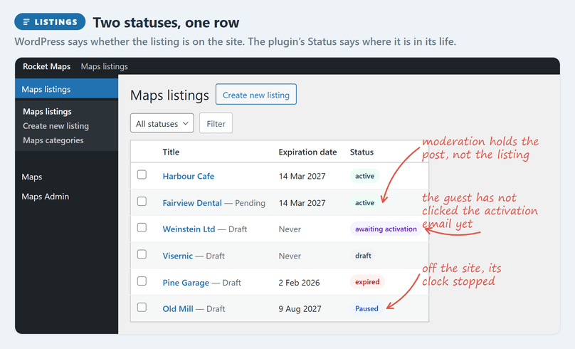
| Status | What it means | How a listing gets there, and how it leaves |
|---|---|---|
| active | A normal, live listing. | The state a listing is created in and returns to. Shown on the map once its post status is Published. |
| awaiting activation | A guest's submission, waiting for the guest to confirm their email address. | Created by a submission from a visitor who was not signed in (Allow anonymous users to submit). The listing stays Draft until the link in the Activation email is clicked. |
| draft | The author's own unfinished work. | Save as draft on the submission form. Nothing is dated until the author submits it. |
| expired | The period ran out. | Set by the hourly expiry check. The listing leaves the map; Renew brings it back. |
| Paused | Taken off the site on purpose. Its period stands still. | Pause listing, by the admin or by the owner in their dashboard. Resume listing brings it back, and its expiry date moves on by the time it was paused. |
The renewal link in the emails works for an owner who is signed out: the dashboard asks them to sign in, then carries on with the renewal. A link belongs to the listing's current period: once the listing is renewed or its date changes, the link in an older email only shows the listing as it is now. With Allow listings to renew off, the link opens the listing instead of renewing it.
Settings: Maps Admin → Settings → Listings (submissions, moderation, expiration, renewal, the expiration test); the listing's Listing Info box.
Emails & Contact Form
Notification emails. Under Maps Admin → Settings → Email notifications, the first field is the address used as the sender and for admin notices; it is required to send emails. Test email delivery sends a test message to check that your server can send mail. Each email has an on/off switch (Send this email) and its own Subject and Text, with [tags] for the listing's details:
| Sent when | Tags | |
|---|---|---|
| Activation email | A visitor who was not signed in submits a listing. It carries the link that activates the account and publishes the listing; with it off, a guest's listing stays unpublished until you publish it by hand. | [listing], [link] |
| Pre-expiration email | Once for each number in Days before it is sent (2,1 by default: two days and one day before the expiry date; enter 7,2,1 for three reminders), on the hourly check. | [listing], [days], [link], [price] |
| Expiration email | The listing expires, with a renewal link. | [listing], [link], [price] |
Emails go out as HTML under your site's name, with the site name in front of the subject; a subject left empty uses the built-in one. With WPML or Polylang, an email goes out in the listing's language. No reminders go to a listing that is paused, waiting for moderation or in the trash. Registration and password recovery send WordPress's own emails.
Contact form. Add the Contact info field to the listing form, then put it into the map's Popups list: the popup gets a Send message button that slides in a contact panel with the listing's name, Your name, Your email, Your message and Send. The message goes to the listing's author, with Reply-To set to the visitor, under the subject "… contacted you about listing …"; when the site has a [webmap-dashboard] page, it carries a link to the listing in the owner's dashboard. Under Settings → Listings → Contact form you can put a Contact Form 7 form in its place (Contact Form 7 shortcode) and show it to logged-in users only.
reCAPTCHA v2 (checkbox) or v3 (invisible) protects the dashboard sign-in, registration and lost-password forms, the listing submission form (guest submissions included), the contact form, and anonymous star ratings (v3). Set it up under Maps Admin → Settings → Advanced settings, with separate v2 and v3 keys and a Test reCAPTCHA configuration button that tries a real token from the page, so it catches a key that does not cover your domain.
Settings: Maps Admin → Settings → Email notifications; → Listings → Contact form; → Advanced settings (reCAPTCHA).
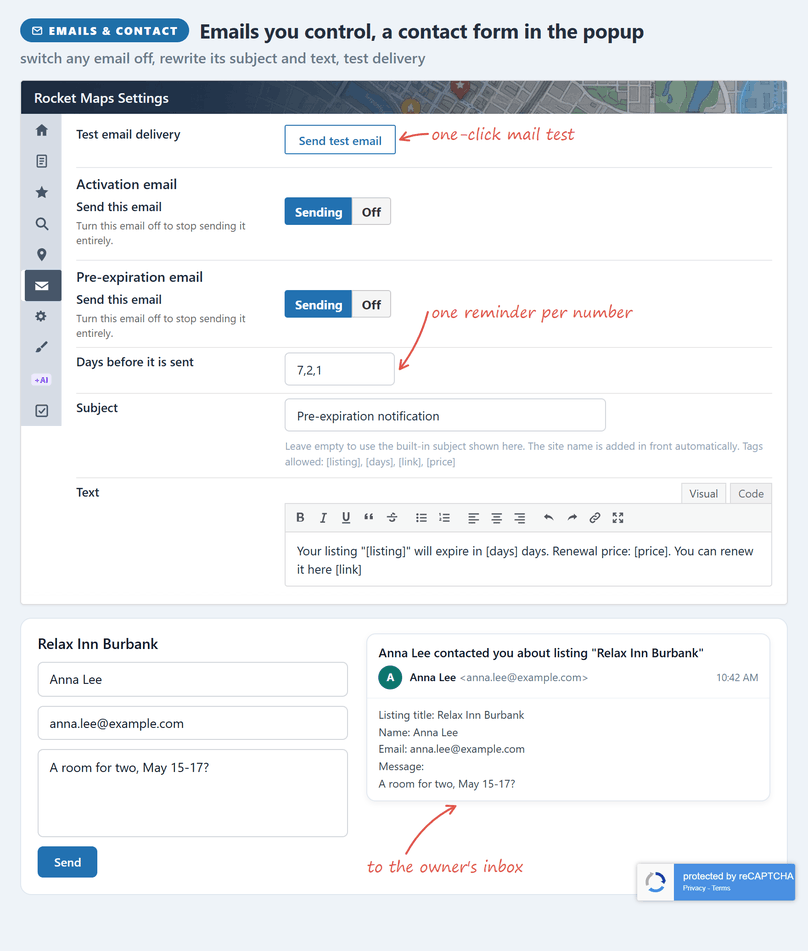
Multilingual & RTL
With WPML or Polylang running two or more languages, your maps work in each of them:
- Listings, categories, locations and tags are translated like posts and terms, one copy per language. A listing's coordinates, status, dates and images carry over to its translations, each listing keeps one set of map markers and one search-index entry whatever the language, and maps, search and counts show the page's language.
- Maps and the listing form are shared by all languages, and their texts are translated in the plugin's own screens: pick a language in the Settings language bar (above the settings tabs, in the Form Builder and on Edit map) and edit that language's texts: the form's field names, descriptions and option labels, and the map's search form.
- Settings per language, marked "Per language: can differ in each language.": the notification emails, the address format and the autocomplete country, the map language, the radius unit and the AI instructions.
- Emails reach listing owners in their listing's language. CSV import and export carry per-language columns such as
title:frorcategories_list:fr. Image and video captions can differ per language.
Right-to-left languages such as Arabic, Hebrew and Persian need no setting: when WordPress runs in an RTL language, popups, the sidebar, cards, forms and the lightbox are mirrored, and Mapbox and MapLibre maps load their right-to-left text support.
The plugin's own interface texts are translated with .po/.mo files: see Translation & Localization.
Settings: the Settings language bar, shown while WPML or Polylang is active.
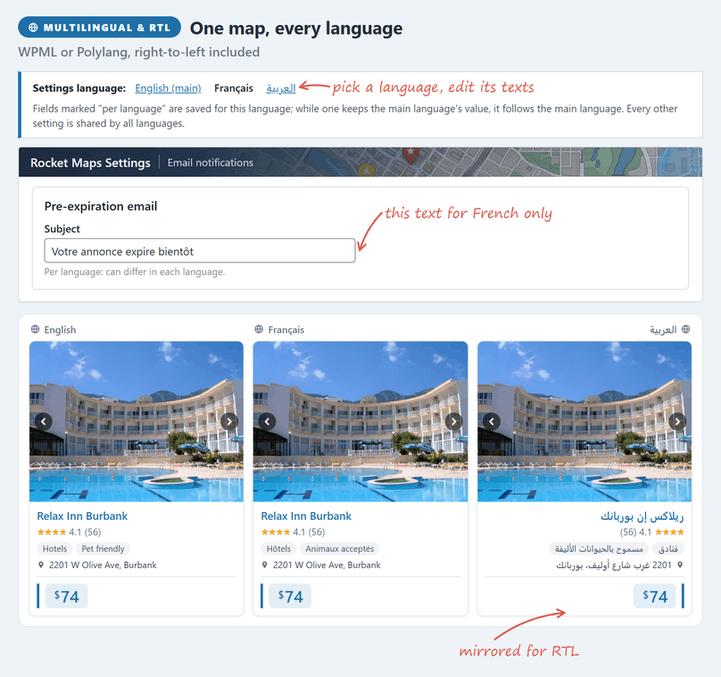
Speed & Tools
- Built for big maps. The front end is a React app that talks to the plugin's REST API. Markers in view load first and the rest stream in batches; they are drawn on a canvas, so tens of thousands of points stay smooth; popups load their content when opened; and Lazy load mode keeps a map's scripts off the page until it is wanted. A search index serves keyword search and suggestions and stays up to date as listings are saved; Maps Admin → Settings → Search settings shows its state, with Rebuild from scratch and Continue indexing buttons.
- Diagnostics. Maps Admin → Settings → Diagnostics → Run front-end diagnostics checks the site the way a visitor sees it: the front-end runtime, shortcodes, the React bundle, the listing post type, the map key, outgoing connections, the REST API and plugins known to interfere (caching, optimisation, security), each marked as passed, warning or failed, with the plugin most likely responsible when a check fails. More tests sit on their own tabs: Test map engine keys (General settings), Test reCAPTCHA configuration (Advanced settings), Test email delivery (Email notifications) and Test listings expiration (Listings).
- Always load front assets (Advanced settings, off by default): turn it on when a shortcode sits in a page builder's header or footer template, a widget area or a page built entirely with a page builder.
- Maintenance pages.
wp-admin/admin.php?page=rmaps_debug(Maps Debug) lists the plugin, licence, database and server details for a support request.wp-admin/admin.php?page=rmaps_reset(Reset plugin data) wipes the settings, the content or everything; the content options ask you to typeDELETEfirst. - Setup wizard and migration: see Installation, Step 4 and Upgrading from Google Maps Locator.
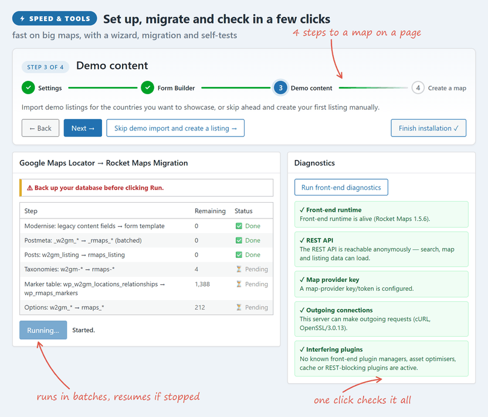
Appearance and Onboarding
The colours of buttons, links, labels and prices follow a palette you pick under Maps Admin → Settings → Customization: one of seven ready palettes, or your own primary, link and button colours. The same tab switches on the image lightbox, which opens listing photos full size. See Customization for the details. The first time you activate the plugin, the setup wizard takes you from the settings to a map on a published page: see Installation, Step 4.
Settings: Maps Admin → Settings → Customization.
Customization
Rocket Maps draws its front end (maps, popups, the sidebar, listing cards, search forms, the submission page and the member dashboard) with its own styles and templates. You can restyle them without writing code from the plugin's Customization settings, and go further by overriding the dashboard and submission templates from your theme.
Where the appearance settings live
- In the WordPress admin, open Maps Admin → Settings.
- On the settings page (titled Rocket Maps Settings), select the Customization tab (the brush icon).
Nothing on this tab is stored until you click Save Changes; the colours are then printed on every page with a map. After changing colours, clear any page and browser cache so the new palette is served.
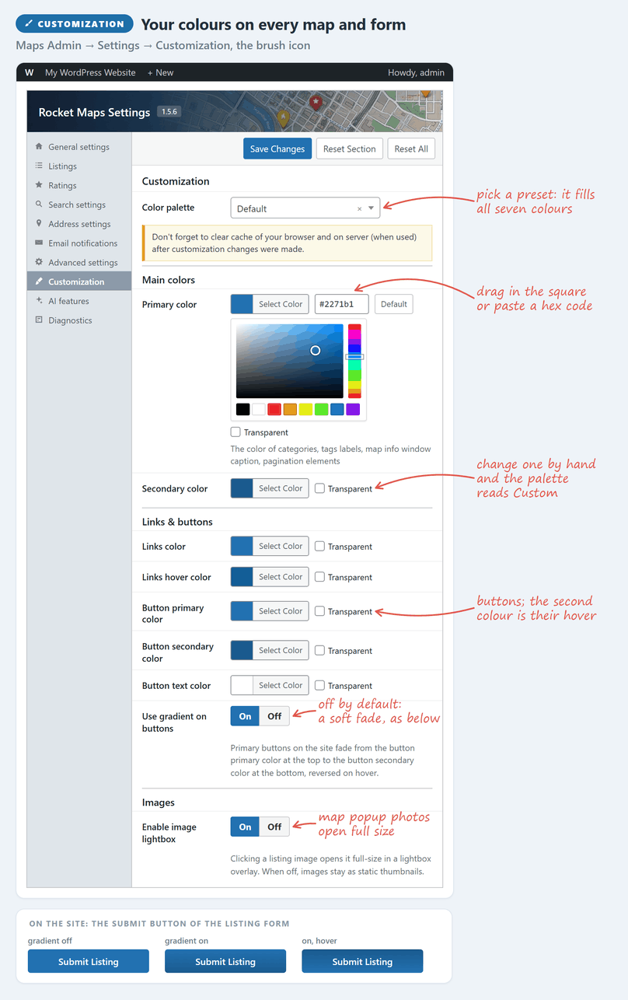
Color palette
The Color palette dropdown is a one-click starting point. Choosing a preset fills in all seven colour fields below it with a matched set of values, which you can then fine-tune; change any of them by hand and the dropdown switches to Custom. Available presets:
| Preset | Notes |
|---|---|
| Default | The standard blue scheme the plugin ships with |
| Turquoise | Teal accent |
| Orange | Orange accent on neutral greys |
| Red | Red accent |
| Yellow | Yellow/gold accent |
| Green | Green accent |
| Gray | Muted neutral scheme |
Tip: Pick the preset closest to your brand first, then adjust the individual colours below. Selecting Default at any time restores the standard values.
Individual colors
Below the palette dropdown the options are grouped into three sections.
Main colors
| Option | What it controls |
|---|---|
| Primary color | Category and tag labels, the popup caption, prices, the lazy-load placeholder and pagination |
| Secondary color | The complementary accent used alongside the primary colour |
Links & buttons
| Option | What it controls |
|---|---|
| Links color | Normal state of links inside the plugin's blocks |
| Links hover color | Link colour on hover |
| Button primary color | Main call-to-action button background (for example the Submit, Save and Search buttons) |
| Button secondary color | The button's hover background (and the second colour used when the button gradient is enabled) |
| Button text color | Text/label colour inside buttons |
| Use gradient on buttons | When turned on, the main buttons (the listing form and dashboard buttons and the contact form's Send) fade from the button primary colour at the top to the button secondary colour at the bottom, reversed on hover. They keep their icons; the search button and the admin buttons stay flat. Off by default. |
Images
| Option | What it controls |
|---|---|
| Enable image lightbox | When on, clicking a listing image in a map popup or the sidebar opens it full-size in a lightbox. When off, images stay as static thumbnails. Off by default. |
Each colour option is a standard WordPress colour picker: click the swatch, choose a colour (or paste a hex value), and save the settings page.
Is there a custom-CSS box?
There is no free-text "Custom CSS" field in the plugin's settings: visual changes are driven by the colour options above. If you need CSS beyond the palette, add your rules through your theme's own Appearance → Customize → Additional CSS (or a child theme stylesheet) and target the plugin's front-end classes, which are all prefixed with rmaps- (for example .rmaps-listing-content__* for the fields of popups and the sidebar, .rmaps-dash__* for the dashboard). The colour options themselves are exposed to the page as CSS custom properties on :root: --rmaps-primary, --rmaps-secondary, --rmaps-links, --rmaps-links-hover, --rmaps-button-primary, --rmaps-button-secondary and --rmaps-button-text, so your own rules can reuse the palette, e.g. color: var(--rmaps-primary);.
Template overrides
The submission page and the member dashboard are rendered from small .tpl.php template files. Your theme can replace any of them with its own copy: the plugin looks in the active theme first and only falls back to its bundled file if no override is found. (Maps, popups, the sidebar and search forms are drawn by the React front end and styled with CSS, see above.)
The override folder
Create this folder inside your active theme (a child theme is strongly recommended so your overrides survive theme updates):
wp-content/themes/<your-theme>/rmaps-plugin/templates/Inside it, mirror the sub-folder and file name of the plugin's own template. The dashboard and submission templates live in a dashboard/ sub-folder, so their override path is:
wp-content/themes/<your-theme>/rmaps-plugin/templates/dashboard/<template-file>.tpl.phpThe plugin resolves each template in this priority order (first match wins):
…/rmaps-plugin/templates/<path>-custom.tpl.phpin your theme…/rmaps-plugin/templates/<path>.tpl.phpin your theme- The plugin's bundled
core/templates/<path>.tpl.php
Overridable templates
These are the templates you are most likely to want to customize (all under rmaps-plugin/templates/dashboard/):
| Template file | What it renders |
|---|---|
submit_page.tpl.php | The [webmap-submit] page: the header and the guest name/email box around the listing form |
_chrome.tpl.php / _chrome_close.tpl.php | The dashboard frame: the user header with Submit new listing and Log out, and the tabs |
tab_listings.tpl.php | The My listings table |
listing_detail.tpl.php | An opened listing: its edit form, Listing info and Actions |
tab_profile.tpl.php | The Profile tab |
auth_login.tpl.php, auth_register.tpl.php, auth_lostpassword.tpl.php, auth_resetpassword.tpl.php | The sign-in, registration and password forms |
_messages.tpl.php | The success and error notices |
Example: override the My listings table
- Locate the bundled template inside the plugin folder:
wp-content/plugins/rocket-maps/core/templates/dashboard/tab_listings.tpl.php - Copy it into your (child) theme, keeping the folder structure:
wp-content/themes/<your-theme>/rmaps-plugin/templates/dashboard/tab_listings.tpl.php - Edit your copy, for example to add a column or wrap the table in a container of your own. Keep the variables the bundled copy uses: they are what the template is given.
- Save. The dashboard now renders your version; no plugin files were touched, so updating the plugin will not overwrite your change. After a plugin update, compare your copy with the new bundled file in case it gained something you want.
Custom markers and marker icons
Map markers are fully customizable, and each marker is chosen where the thing it represents is edited.
Per-category marker icons
The most common way to brand your map is to give each category its own marker. Open a category under Maps listings → Maps categories and use the Marker picker, or the compact picker in the category's row of the list. It offers three modes:
- FA icon: choose a Font Awesome glyph and set its colour. The icon is drawn inside the map pin.
- PNG icon: pick one of the marker images bundled with the plugin.
- Upload: upload your own marker image (PNG, JPG, SVG or WebP, up to 100 KB); it is stored in the Media Library and used as the pin.
Each pick is saved on the spot, without pressing Update. Listings inherit their marker from their category, walking up to the parent categories when a sub-category has none. On the map, category markers are drawn by the Use categories FA/PNG markers source; see Categories, Locations and Tags.
Per-listing and per-map markers
- A single listing can carry its own marker for each of its addresses, set with the address's Marker icon in the listing form (a Font Awesome icon, a PNG or an upload, with its size). The Address field's Marker icon option in the Form Builder decides which of these submitters may use. On the map it is the Use listings FA/PNG markers source.
- Each map has an ordered list of marker sources (category markers, listing markers, images, rating, field labels, opening hours, dots), configured in its Markers box, where the first source that produces a marker for a given listing wins, and each source has its own size.
Replacing the bundled marker image set (advanced)
The plugin ships a folder of ready-made marker PNGs (201 images in icons/Default/) that appear under the picker's PNG icon mode. A theme can supply its own set by placing image files, in sub-folders of icons/, in:
wp-content/themes/<your-theme>/rmaps-plugin/resources/images/map_icons/When that folder exists, the plugin serves marker images from your theme instead of its own bundled set.
Translation & Localization
Rocket Maps is fully internationalized and ready to translate into any language WordPress supports. Every user-facing label (admin menus, settings, the listing submission form, the interactive map and its controls, the drag-and-drop form builder, the CSV importer, and front-end messages) is wrapped for translation. The one exception is the settings panel's own controls (Save Changes, Reset Section…), which come from the bundled Redux framework under its own redux-framework text domain. This section explains where the translation files live, how to name them, and how to create a translation using either Loco Translate (in your dashboard) or Poedit (on your desktop).
The text domain
All translatable strings in the plugin share a single text domain: rmaps. You will use this text domain in every translation file name (see File naming below).
The plugin loads its translations automatically on every request: no configuration is required. As soon as a matching translation file is present in one of the supported locations, WordPress serves the translated strings.
The translation template (.pot)
The plugin ships with a ready-made translation template you can use as the starting point for any language:
wp-content/plugins/rocket-maps/core/languages/rmaps.potThe .pot (Portable Object Template) file contains every original English string in the plugin (about 1,800 phrases) with empty translation slots. You never edit the .pot itself: you use it to generate a language-specific .po/.mo pair. The plugin header declares this folder as its Domain Path (/core/languages), so translation tools such as Loco Translate detect the template here automatically.
Where your translation files belong
You produce two files per language:
| File | Purpose |
|---|---|
rmaps-{locale}.po | Human-readable catalog you edit in a translation tool |
rmaps-{locale}.mo | Compiled binary WordPress actually reads at runtime |
There are two possible locations. The global folder is strongly recommended:
- Global languages folder (recommended, update-safe):
wp-content/languages/plugins/rmaps-{locale}.po
wp-content/languages/plugins/rmaps-{locale}.moWordPress checks this location first, and your files here are never touched when the plugin updates. This is where Loco Translate's "System" location and translate.wordpress.org both save.
- The plugin's own folder (not recommended):
wp-content/plugins/rocket-maps/core/languages/rmaps-{locale}.moFiles placed inside the plugin will be overwritten (and your work lost) every time the plugin is updated. Only use this for quick throwaway testing.
Tip: Always keep your finished translations in wp-content/languages/plugins/ so a plugin upgrade never erases them.
File naming (required)
The file name must be exactly rmaps-{locale}.po / rmaps-{locale}.mo, where {locale} is the WordPress locale code for your language. If the name or locale is wrong, WordPress will silently ignore the file. Examples:
| Language | Locale | .mo file name |
|---|---|---|
| French (France) | fr_FR | rmaps-fr_FR.mo |
| German | de_DE | rmaps-de_DE.mo |
| Spanish (Spain) | es_ES | rmaps-es_ES.mo |
| Portuguese (Brazil) | pt_BR | rmaps-pt_BR.mo |
| Italian | it_IT | rmaps-it_IT.mo |
You can confirm your site's locale under Settings → General → Site Language. WordPress also supports a per-user admin language set in each user's profile: a translation file must exist for that locale for it to take effect.
Map, form builder, and other interface strings
The interactive map, the listing submission form, the drag-and-drop form builder, the Edit map screen, and the CSV importer are built with React, but their text is translated through the same PHP text domain: the strings are translated on the server and handed to the interface. This means:
- Every interface string is covered by the single
rmaps.pottemplate and thermaps-{locale}.po/.mofiles described above. - There are no separate JSON language files to generate: one
.po/.mopair per language translates the entire plugin, both classic PHP screens and the React-based interfaces.
Method 1: Loco Translate (recommended, translate in your dashboard)
Loco Translate lets you translate directly inside WordPress with no desktop software, and saves to the update-safe global folder.
- In your dashboard, go to Plugins → Add New, search for Loco Translate, then Install and Activate it.
- Go to Loco Translate → Plugins and click Rocket Maps in the list. Loco automatically finds the bundled
rmaps.pottemplate. - Click New language.
- Choose your language from the WordPress language dropdown.
- For Choose a location, select System (this saves to
wp-content/languages/plugins/, which survives plugin updates). Click Start translating. - In the editor, click any string in the Source text list, type its translation in the {Language} translation box at the bottom, and move to the next string. Loco marks untranslated strings so you can track progress.
- Click Save. Loco compiles the
.mofile automatically: no extra step is needed. - Reload a front-end or admin page to see the translated text.
Keeping a translation current: after a plugin update introduces new strings, reopen your language in Loco Translate and click Sync to pull the new phrases from the template, then translate and Save again.
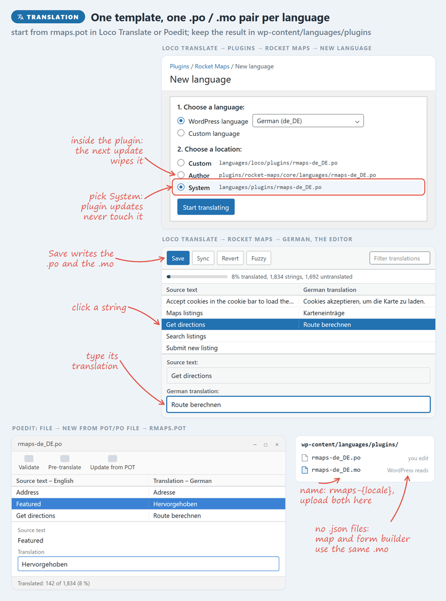
Method 2: Poedit (desktop application, start from the .pot)
Poedit is a free desktop editor ideal for translating offline or handing the file to a professional translator.
- Download and install Poedit from poedit.net.
- Get a copy of the template from your server:
wp-content/plugins/rocket-maps/core/languages/rmaps.pot. - Open Poedit and choose Create new translation (or File → New from POT/PO file), then select the
rmaps.potfile. - When prompted, choose the target language (e.g. German). Poedit fills in the translation metadata for you.
- Translate each entry: click a source string, type the translation in the lower panel, and continue through the list.
- Choose File → Save. Name the file exactly
rmaps-{locale}.po(for examplermaps-de_DE.po). Poedit automatically writes the matching compiledrmaps-{locale}.moalongside it. (If you don't see the.mo, enable "Automatically compile MO file when saving" in Poedit's preferences.) - Upload both files (
.poand.mo) via SFTP or your host's File Manager to:
wp-content/languages/plugins/- Make sure Settings → General → Site Language matches the locale you translated, then reload the site.
Keeping a translation current: when a plugin update adds new strings, reopen your .po in Poedit and choose Translation → Update from POT file, select the updated rmaps.pot, translate the new entries, and save again.
Quick checklist
- Text domain is
rmaps: used in every file name. - Start from
wp-content/plugins/rocket-maps/core/languages/rmaps.pot. - Name your files
rmaps-{locale}.poandrmaps-{locale}.mowith a valid WordPress locale. - Save them in
wp-content/languages/plugins/so updates don't erase them. - One
.po/.mopair translates the whole plugin, including the map and form-builder interfaces (only the settings panel's Redux controls use the separateredux-frameworkdomain). - Set the matching language under Settings → General → Site Language.